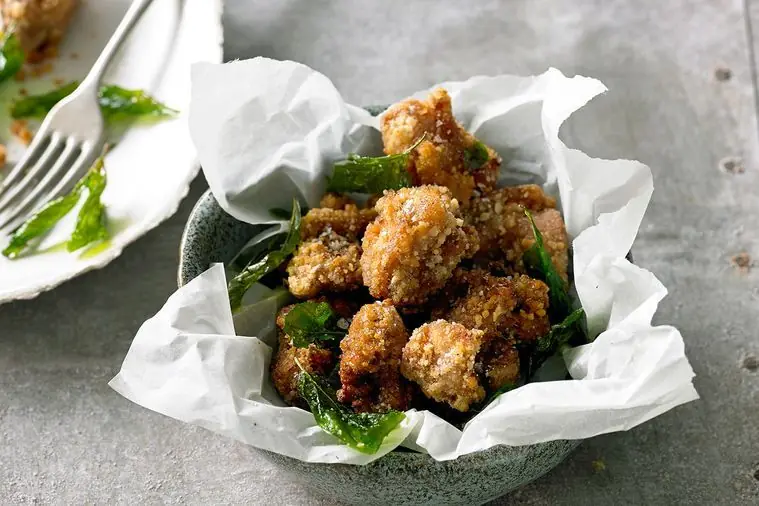

Popcorn Chicken with Basil
- Total time25 mins
- Serves4
- Ingredients15
- Steps5

Ingredients
- 600g boneless chicken thigh fillets, preferably skin-on, cut into 3cm pieces
- 3 cloves garlic, peeled and minced
- 1 tsp grated ginger
- 1 tbsp soy sauce
- 1 tbsp Shaoxing wine
- 2 tsp sugar
- ½ tsp Chinese five spice powder
- 1 cup sweet potato flour
- 2 litres oil, for deep-frying
- 1 cup loosely packed Thai basil leaves
- Spice salt
- 1 tbsp salt
- ¼ tsp Chinese five spice powder
- ¼ tsp white pepper
- A pinch chilli powder
Directions
- Combine the chicken with the garlic, ginger, soy sauce, Shaoxing wine, sugar and five spice powder and set aside to marinate for at least 10 minutes.
- Coat the chicken pieces in the sweet potato flour and shake off any excess.
- Heat the oil in a wok or saucepan. When the oil reaches 150°C scatter the basil leaves into the wok and stir for about 20 seconds, or until the basil turns translucent. Remove the basil from the wok and drain on absorbent paper.
- Increase the heat of the oil to 170°C and fry the chicken in batches for about 3 minutes, or until golden brown and cooked through, regularly skimming any floating flour bits from the oil.
- For the spiced salt, mix the ingredients together and toast in a dry frypan over low–medium heat for 2 minutes, or until fragrant. Toss the chicken with the fried basil leaves and season with a good pinch of the spice salt. Serve immediately.
Recipe credit: delicious.com.au